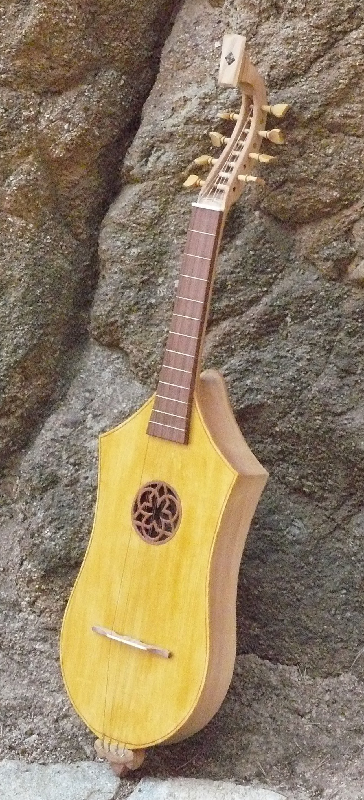
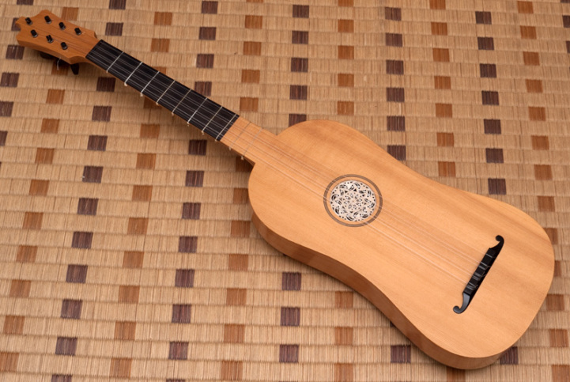
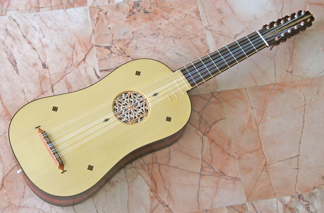
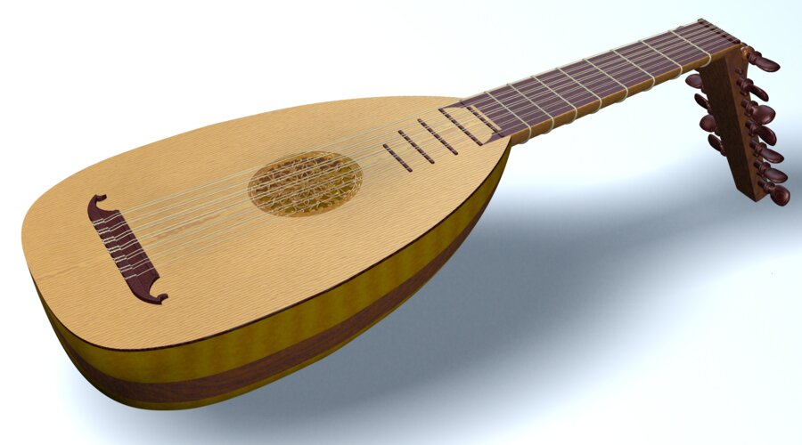
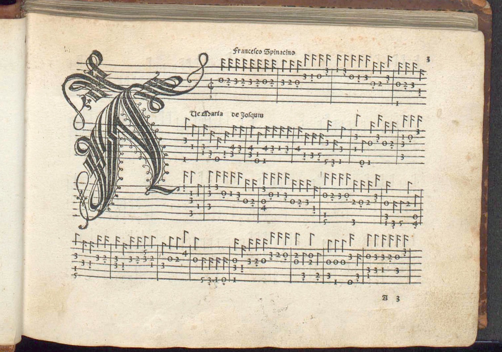
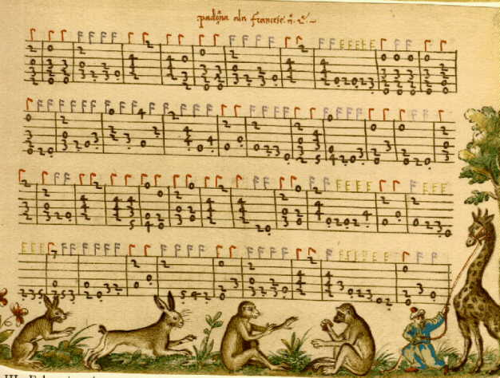

Five Centuries of Guitar
Juilliard Evening Division
Spring, 2013
Instructor: Dante Rosati
What is called a "guitar"? guitar,
n.
Pronunciation:
/ɡɪˈtɑː(r)/
Forms: 16 ghittar, gitarr(e, gittar(r, gotire, guittarre,
16–17 guitarre, 16–18 guittar, 17 guitare, 16– guitar. Also in
Spanish, and quasi-Spanish or Italian form, 16, 18 guitarra, 16
guittara, 18 ghitarra.
Etymology: < Spanish guitarra, and its modern French
adaptation guitare (Provençal guitara , Italian chitarra ),
< Greek κιθάρα . The word had been adopted in classical Latin
as ˈcithara , whence Italian cetera , cetra ,
Provençalcidra , Old High German cithara , modern German
zither , modern French cithare , English cither . See also citole
n., gittern n.
A musical instrument of the lute class, with six strings, which
are twanged with the right hand, and a handle or finger-board
provided with frets for stopping the notes with the left hand.
a1637 B. Jonson Masque of Gypsies 50 in tr. Horace Art
of Poetry (1640) , Give me my Guittara: and roome for
our Chiefe.
1648 T. Gage Eng.-Amer. viii. 23 Tuning
his Guitarra and singing to us some verses.
1668 H. More Divine Dialogues (1713) iii. i.
180 Sometimes with a careless stroke I brush the
Gittar.
1683 London Gaz. No. 1862/8, A little
Gittar, wrought with Ivory and Ebony on the back.
1700 J. Astry tr. D. de Saavedra Fajardo Royal
Politician II. 99 So delicate, like a Guitarre, that
it won't bear the fingers.
1766 O. Goldsmith Vicar of Wakefield I. v.
44 Mr. Thornhill..then took up the guitar himself.
1807 J. Beresford Miseries Human Life II. xvi.
90 The dead, lumpish, tubby tones of the fourth and
fifth strings of the guittar.
1820 C. R. Maturin Melmoth IV. xxvi. 119
Their ghitarras might be disposed of.
1842 R. H. Barham Sir Rupert in Ingoldsby Legends 2nd
Ser. 32 Full sweetly she sang to a sparkling guitar,
With silver cords.
1866 C. Engel Introd. Study National Music ix.
350 The guitarra..is still to be found..among the
Arabs in Tunis.
1879 J. Stainer Music of Bible 57 It is
difficult to determine when the cithara had so far departed from
the form of a lyre as to become a guitar.
fig.
1685 J. Crowne Sir Courtly Nice ii. 11 Oh!
no, Madam, he's the General Guitarre o' the Town, inlay'd with
every thing Women fancy.
1710 Brit. Apollo II. No. 101. 3/2 Where
is this Hatchet-fac'd Gittar?
Forms: ME sitol, sital, sytalle, ME sytole, citole, ME
cytole, cithole, cythole, ( sotile, gytolle), ME–15 sythol(l, (
sytolphe), 18 (Hist.) citole, sytol.
Etymology: < Old French citole (-olle, sitole, ci-,
cytholle, -oile, chistole), corresponding to Provençal
citola, Old Spanish citola, Middle High German zitôl(e;
apparently a derivative of Latin cithara (citara), with diminutive
ending; but its history requires further investigation. (As a
living word it was accented ˈcitole; it has been made ciˈtole by
modern writers after Old French or Italian)
Derivation < Latin cista, wooden box, is out of the question;
but the occasional French mis-spelling cistole may possibly
indicate a ‘popular etymology’ associating it with that word.
Obs. exc. Hist.
A stringed instrument of music much mentioned in 13–15th c.;
originally the same as the cithara, though the mediæval name
may have been given to a special form: see quots. 1879
–1880.
1388 Bible (Wycliffite, L.V.) 2 Sam. vi. 5
Harpis and sitols, and tympans [Vulg. citharis, et lyris, et
tympanis; 16th c. vv. psalteries].
c1400 (1380) Pearl (Nero) l. 91
Sytole stryng & gyternere.
c1405 (1385) Chaucer Knight's Tale (Hengwrt)
(2003) l. 1101 A Citole [1 MS. cythole] in hir right
hand hadde she.
c1410 Sir Cleges 102 Harpis, luttis, and
getarnys, A sotile, & sawtre.
14.. in T. Wright & R. P. Wülcker Anglo-Saxon
& Old Eng. Vocab. (1884) I. 738/18 Hic psalmatus,
the sytalle.
1460 Lybeaus Disc. 137 With sytole,
sautrye yn same, Harpe, fydele and crouthe.
1480 Caxton tr. Ovid Metamorphosis xii.
xvi, Harpes, sawteryes, rootes, gytolles [? sytolles],
timbres, symphones.
c1540 Destr. Troy 3435 With synging, &
solas, and sitals amonge.
?1553 (1501) G. Douglas Palice of Honour
(London) i. l. 505 in Shorter Poems (1967) 38 Sytholl,
psalttry, and vocis swete as bell.
mod.
1823 tr. Sismondi's Lit. Eur. (1846) I. v.
128 To play on the citole and mandore.
1871 D. G. Rossetti Blessed Damozel in Poems
xxi, Angels meeting us shall sing To their citherns
and citoles.
1879 J. Stainer Music of Bible 51 The old
citole..seems only to have differed from the sawtry in that its
strings were twanged with the finger-ends.
1880 G. Grove Dict. Music, Citole. This
word, used by poets in the 13th, 14th, and 15th centuries..is
supposed to mean the small box-shaped psaltery, sometimes depicted
in MSS.

gittern,
n.
Pronunciation:
/ˈɡɪtən/
Forms: ME gitern(e, ME–15 gytern(e, (ME getarne, geterne,
getyrne, gittyrn), (15 getron, githorn, guthorne), 15–16 gitterne,
(16 gittron, gytterne), 16, 18 ghittern, 17 guiterne, 15– gittern.
Etymology: < Old French guiterne, guisterne, etc.
(obsolete since 16–17th cent.) of obscure formation. The form
guiterre also occurs; usually believed to represent an altered
form of Greek κιθάρα cithara n. Compare guitar n. andcithern n.
arch.
a. An old instrument of the guitar kind strung with wire, a
cithern.
1377 Langland Piers Plowman B. xiii. 233,
I can noither tabre ne trompe..ne synge with the gyterne.
c1410 Sir Cleges 101 Of harpis, luttis,
and getarnys.
1571 in J. Cranstoun Satirical Poems Reformation
(1891) I. xxviii. 67 Quhair I begouth with guthorne
for to dance.
1613 W. Leighton Teares or Lament. 70 With
Drumes & Fife & Shrillest shalmes, with Gittron and
bandore.
1633 T. Heywood Eng. Trav. ii, in Wks. (1874) IV.
29 A fourth, bestrides his Fellowes, thinking to
scape, As did Arion, on the Dolphins backe, Still fumbling on a
gitterne.
1693 T. Southerne Maids Last Prayer iii.
iii, Where's my Gittern?
1792 Minstrel (1793) II. 100
Elizabeth..played incomparably on the guiterne.
1816 Scott Old Mortality x, in Tales of my Landlord
1st Ser. III. 209 The same hand..can touch a tinkling
lute, or a gittern, to soothe the ears of the dancing daughters of
perdition in their Vanity Fair.
1879 Tennyson Falcon, You know that I can
touch The ghittern to some purpose.
b. attrib., as gittern-head (cf. cittern-head n. at cithern n.
Compounds 2), gittern-wire.
a1627 T. Middleton & W. Rowley Old Law (1656) iv.
i. sig. G4, The Heads of your Instruments differ,
yours are Hogs-heads their Cittern and Gittern Heads.
1662 Irish Act 14 Chas. II c. 8 Bk. Rates,
Wire called..Virginal and Ghittern wire.
The guitar, vihuela and lute in the Renaissance.



Five types of compositions:
1) Fantasias, ricercare - free compositions with passagework and
contrapuntal sections
2) Dances
3) Variations
5) Intabulations of vocal works: sacred and secular vocal
compositions arranged for solo instrument
6) Songs - works for voice with accompaniment.
1507 Francesco Spinacino "Intabolatura de
lauto librom primo & secundo"

1508 Joan Ambrosio Dalza "Intabolatura de
Lauto libro quarto"
~1517 Vincenzo Capirola "Capirola Lutebook"

1546 Mudarra, Alonso - "Tres Libros de Musica en Cifras para
Vihuela"
1551 Gorlier, Simon - Le Troysieme Livre contenant plusieurs duos et
trios
1551, 1552, 1554, 1556 Le Roy, Adrian - Premier Livre de Tabulature
de guiterre (Four books published over 5 years)
1552, 1553 Morlaye, Guillaume "Le Premier Livre de chansons, etc"
(Four books published)